ChemCrow: Augmenting large-language models with chemistry tools
ChemCrow：用化学工具增强大语言模型
简介
LLM 在化学任务上缺乏精确知识与外部信息访问能力，容易产生幻觉，而专业化学工具分散、学习曲线陡峭、难以集成。ChemCrow 基于 GPT-4 与 LangChain，按 ReAct 的 Thought/Action/Action Input/Observation 循环组织推理，集成 18 个专家设计的工具（通用检索、分子、安全、反应四类，含可驱动机器人平台的 ReactionExecute），把 LLM 从'过度自信但常出错的信息源'转变为会调用工具收集信息再推理的引擎。Agent 自主规划并在 RoboRXN 平台成功执行了驱蚊剂 DEET 与三个有机催化剂的合成，并通过人机协作筛选发现新型发光团（目标 369nm、实测 336nm）。在 14 个任务上，专家评审认为 ChemCrow 在事实正确性、推理质量与任务完成度上优于无工具的 GPT-4，但 LLM 评审 EvaluatorGPT 反而因 GPT-4 回答更流畅而给其更高分，揭示 LLM-as-judge 在事实关键领域不可靠。该论文是 Agent 工具调用架构与评测方法学的经典参考。
问题
LLM 在化学等专业领域无法稳定完成精确任务（如 IUPAC 名称转分子结构、基础数学运算），且缺乏外部知识源访问，容易产生幻觉；同时领域内专家工具分散在孤立环境中，集成与互操作困难、学习曲线陡峭，导致化学自动化程度低。论文要解决：如何通过 Agent 架构将专家设计的工具与 LLM 推理结合，使 LLM 可靠地完成跨有机合成、药物发现与材料设计的多样化化学任务。
方法
构建 LLM 化学引擎 ChemCrow：以 GPT-4（temperature 0.1）为推理核心、LangChain 为应用框架，按 ReAct 范式（Thought/Action/Action Input/Observation）迭代推理并调用工具直至得出最终答案。集成 18 个专家设计工具，分四类：通用工具（WebSearch、基于 OpenAI Embeddings+FAISS 的文献 RAG 检索 LitSearch、Python REPL、Human 人机交互工具）、分子工具（Name2SMILES、Similarity、PatentCheck、SMILES2Weight 等）、安全工具（ControlledChemicalCheck、ExplosiveCheck、SafetySummary，命中受控/爆炸物即终止执行）、反应工具（ReactionPredict、ReactionPlanner、ReactionExecute 可连接 RoboRXN 机器人平台并通过 LLM 循环自动修正无效操作）。工具通过自然语言描述（用途+输入输出）接入、易于扩展；另含硬编码安全指令。评测采用双轨：4 位专家化学家评审（化学正确性/推理质量/任务完成度三维度）与 LLM 评审 EvaluatorGPT。
关键结果
集成 18 个专家设计工具，在 14 个用例上评估；Agent 自主规划并在 IBM RoboRXN 机器人平台成功合成 DEET 与三个硫脲有机催化剂（Schreiner's、Ricci's、Takemoto's），4 个合成均得到预期产物
人机协作发现新型发光团：目标吸收波长 369nm，实测 336nm，经合成与分析确认
4 位专家化学家在化学正确性、推理质量、任务完成度三个维度评审：ChemCrow 在需要扎实化学推理的复杂任务上整体优于无工具 GPT-4；GPT-4 仅在依赖训练数据记忆的简单任务（如 DEET、paracetamol 合成）上占优
EvaluatorGPT（LLM 评审）平均反而给 GPT-4 更高分，依据是回答更流畅、看似更完整，无法识别 GPT-4 的事实性错误
可复现性实验：同一任务 5 次独立执行中，2 次将 SMILES 'CCc1ccc(Cl)cc1' 错误解读为 trans-烯烃产物，导致反应机理结论错误
开源版本包含主 Agent 设置与原实现 12 个工具的子集，全部实验记录公开
创新点
相对 ReAct 与 MRKL 等已有工作，本文贡献不在提出新 Agent 架构，而是将该范式系统性落地到化学领域，并展示了最早的化学 LLM Agent 与物理世界（机器人合成平台）的交互之一；证明集成专家工具可涌现新能力并缓解幻觉。同时通过对照实验明确揭示 GPT-4 作为评审无法区分明显错误的 GPT-4 输出与正确结果，为 LLM-as-judge 的适用边界提供了早期实证警示。
团队参考意义
相关度级别：high
命中能力域：3.3 Agent 架构与工具使用 | 3.5 评测与可靠使用
理由：论文直接命中团队两个核心能力域：3.3 方面，它是'Agent loop + 工具调用'的代表性工程范本——ReAct 循环、工具的自然语言描述接入规范、工具按功能分类组织、安全护栏（受控化学品检查命中即停）、Human 工具实现高风险操作前的人工确认，均可直接迁移到团队的代码生成/审查 Agent 与研发自动化工具设计；3.5 方面，其专家评审与 EvaluatorGPT 的系统性分歧（LLM 评审偏好流畅而非正确）、可复现性实验设计、以及'Agent 效果受限于工具质量'的结论，对团队构建产出质量评测体系有直接指导意义。
建议动作：深入精读并做内部分享
中文全文
arXiv:2304.05376v5 [physics.chem-ph] 2023年10月2日
Augmenting large language models with chemistry tools
Andres M. Bran 12 ∗ Sam Cox 3 ∗ Oliver Schilter 24 Carlo Baldassari 4 Andrew D. White 3 Philippe Schwaller 12
1 人工化学智能实验室（LIAC），ISIC，洛桑联邦理工学院（EPFL） 2 国家卓越研究中心（NCCR）催化项目，EPFL 3 罗切斯特大学化学工程系 4 加速发现部门，IBM欧洲研究院 ∗
同等贡献。
Abstract
在过去几十年中，许多优秀的计算化学工具相继被开发出来。将这些工具集成到一个具有更高易用性的单一平台中，可以通过克服陡峭的学习曲线来帮助它们充分发挥潜力。近年来，大语言模型（LLMs）在跨领域的任务中展现出强大的性能，但在处理化学相关问题时却表现不佳。此外，这些模型无法访问外部知识来源，限制了它们在科学应用中的实用性。在本研究中，我们提出了 ChemCrow，一个旨在完成有机合成、药物发现和材料设计等领域任务的 LLM 化学 Agent。通过集成 18 个由专家设计的工具，ChemCrow 增强了 LLM 在化学领域的性能，并涌现出新的能力。我们的 Agent 自主规划并执行了一种驱虫剂和三种有机催化剂的合成，并指导发现了一种新型生色团。我们的评估（包括 LLM 评估和专家评估）证明了 ChemCrow 在自动化多种化学任务方面的有效性。令人惊讶的是，我们发现 GPT-4 作为评估者无法区分明显错误的 GPT-4 补全结果与 ChemCrow 的表现。我们的工作不仅能够辅助专业化学家并降低非专业人士的使用门槛，还通过弥合实验化学与计算化学之间的鸿沟来促进科学进步。公开可用的代码可在 https://github.com/ur-whitelab/chemcrow-public 获取。
1 Introduction
大语言模型（LLMs）1-5 通过自动化自然语言任务，已经变革了众多行业。一个典型的例子是 2021 年推出的 GitHub Copilot 6，以及更近期的 StarCoder 7，后者能够基于文件及已打开窗口的上下文提供代码补全建议，从而提高开发人员的工作效率 8。最新的进展大多基于 Transformer 架构 9，该架构最初为神经机器翻译而提出，随后被扩展到各种自然语言处理任务，并展现出卓越的少样本（few-shot）和零样本（zero-shot）性能 2。然而，认识到 LLMs 的局限性至关重要：它们在基础数学与化学运算等看似简单的任务上常常表现不佳 10,11。例如，GPT-4 12 和 GPT-3.5 13 无法始终准确地计算 12345*98765 的乘法，也无法将 IUPAC 名称转换为相应的分子图 14。这些缺陷可归因于模型的核心设计，即专注于预测后续词语。为了应对这些局限，一种可行的方法是利用专用的外部工具或插件来增强大语言模型，例如用于数学运算的计算器，或用于 IUPAC 名称到结构转换的 OPSIN 15。这些专用工具能够给出精确的答案，从而弥补 LLMs 在特定领域的固有不足，并提升其整体性能与适用性。
化学作为一个领域，已经受到由专家设计的人工智能（AI）系统的影响，这些系统用于解决特定问题，例如反应预测 16-20、逆合成规划 21-27、分子性质预测 28-32、从头分子生成 33,34、材料设计 35,36，以及近期的贝叶斯优化（Bayesian Optimization）37-39。由于其训练方式的特性，已有研究表明，代码生成型 LLMs 确实具备一定的化学理解能力 14。这里所说的“理解”，是指 LLMs 能够适应观察结果、进行多步规划，并正确响应意图 13,40-44。然而，与其他领域相比，化学领域所实现的自动化水平仍然相对较低，这主要是由于化学本身高度依赖实验的特性、数据的匮乏，以及计算工具的范围和适用性有限——即使在其专属领域内也是如此 45。
此类工具的集成往往发生在彼此孤立的环境中，例如 RXN for Chemistry 18,24,46-48 和 AIZynthFinder 25,49,50，这在一定程度上得益于企业为促进可集成性而制定的指令。尽管大多数工具由开源社区开发，或可通过应用程序编程接口（API）访问，但它们的集成与互操作性给实验化学家带来了相当大的挑战，这主要是由于实验化学家缺乏计算方面的技能储备，且工具种类繁多、学习曲线陡峭，从而阻碍了这些工具潜力的充分发挥。
![Figure 1: Overview and toolset . a) An overview of the task-solving process. Using a variety of chemistryrelated packages and software, a set of tools is created. These tools and a user input are then given to an LLM. The LLM then proceeds through an automatic, iterative chain-of-thought process, deciding on its path, choice of tools, and inputs before coming to a final answer. The example shows the synthesis of DEET, a common insect repellent. b) Toolsets implemented in ChemCrow: reaction, molecule, safety, search, and standard tools.](assets/a764/figures/fig_1.png)
受其他领域 10,51,52 成功应用的启发，我们提出了一种由大语言模型（LLM）驱动的化学引擎 ChemCrow，旨在简化药物与材料设计及合成等领域中各类常见化学任务的推理过程。ChemCrow 利用多种由专家设计的化学工具，其运行方式是使用关于任务及期望格式的具体指令对 LLM（在我们的实验中为 GPT-4）进行提示，如图 1a 所示。LLM 会获得一份工具名称列表、各工具用途的描述以及预期输入/输出的详细信息，随后被指示在必要时使用所提供的工具来回答用户给出的提示。模型被引导遵循 Thought、Action、Action Input、Observation 格式 43，该格式要求模型对任务的当前状态进行推理，考虑其与最终目标的相关性，并据此规划后续步骤，从而体现其理解水平。在 Thought 步骤中完成推理后，LLM 请求调用某个工具（以关键字 'Action' 引导）以及该工具的输入（以关键字 'Action Input' 标注）。随后文本生成暂停，程序尝试使用所提供的输入执行所请求的函数。执行结果以关键字 'Observation' 为前缀返回给 LLM，LLM 随后再次进入 Thought 步骤。这一过程持续迭代，直至得到最终答案。
这一工作流程此前已在 ReAct 43 和 MRKL 53 论文中有所描述，它有效地将思维链（CoT）推理与任务相关的工具结合起来。其结果是——正如后续章节将展示的那样——大语言模型（LLM）从一个过度自信——尽管通常是错误的——信息来源，转变为一个推理引擎：该引擎被提示对任务进行反思，使用合适的工具采取行动以收集额外信息，观察工具的响应，并重复这一循环，直至得出最终答案。与本工作同期，54 描述了一种类似的方法，即通过工具增强 LLM，以完成仅凭 GPT-4 无法完成的化学任务。他们的工作特别聚焦于云端实验室，而我们的工作则研究了广泛的任务与工具，其中包括与云端连接的机器人合成平台的对接。如图 1b 所示并在第 5.3 节中所述，我们实现了 18 种工具，包括网络搜索和文献搜索，以及分子专用和反应专用工具，这些工具不仅赋予 ChemCrow 关于分子和反应性质的知识，还赋予其直接在实体实验室中执行任务的能力。尽管所包含的工具列表并非详尽无遗，但 ChemCrow 的设计使其能够轻松适配新的应用：只需通过自然语言提供该工具及其预期用途的描述即可。ChemCrow 既可以作为专业化学家的助手，同时通过提供一个访问准确化学知识的简单界面，降低了非专业人士的使用门槛。我们在 14 个用例（见附录 G）上分析了 ChemCrow 的能力，包括合成目标分子、安全控制，以及搜索具有相似作用模式的分子。
2.1 Autonomous chemical synthesis
基于诸如“规划并执行一种驱虫剂的合成”（图 1a）和“寻找并合成一种可加速 Diels-Alder 反应的硫脲有机催化剂。”（图 2b）这样简单的用户输入，ChemCrow 找到了相应的分子、规划了合成路线，并在 IBM Research 的云端连接专有 RoboRXN 平台上执行了这些合成 55。借助 RoboRXN，ChemCrow 自主运行了一种驱虫剂（DEET）以及三种已知硫脲有机催化剂（Schreiner 的 56,57、Ricci 的 58 和 Takemoto 的 59）的合成。为此，ChemCrow 依次查询了 LitSearch / WebSearch、Name2SMILES、ReactionPlanner 以及最后的 ReactionExecute 等工具，以整合信息并完成这些任务。合成的结构如图 2d 所示，各工具的详细描述见第 5.3 节。这四个合成均成功得到了预期化合物，展示了与合成规划和执行相关的 LLM 智能体与物理世界的交互。
标准化的合成流程是成功执行的关键。然而，预测得到的流程 46 并不总能在 RoboRXN 平台上直接执行；典型问题包括“溶剂量不足”或“纯化操作无效”。解决这些问题需要人工干预，在尝试执行合成之前修正无效的操作。ChemCrow 能够自主地从平台查询合成验证数据，并迭代地调整合成流程（例如增加溶剂量），直到合成流程完全有效。ActionCleaner 功能包含在 ReactionExecute 工具之中，无需人工干预。该示例展示了 ChemCrow 自主调整并成功执行标准化合成流程的能力，减轻了实验室安全方面的顾虑，并使其自身适应机器人平台的特定条件。
2.2 Human-AI collaboration
人与计算机之间的交互尤其富有成效，特别是在化学领域——在该领域中，决策往往基于实验结果做出，而实验本身的执行可能颇具挑战性，甚至超出了最先进自主实验室的能力范围。在此，我们展示了这种交互如何能够带来一种新型发色团的发现。在此示例中，ChemCrow 被指示训练一个机器学习模型，以帮助筛选候选发色团库。如图 3 所示，ChemCrow 能够加载、清洗和处理数据，训练并评估一个随机森林（Random Forest）模型，并最终基于该模型和给定的目标最大吸收波长 369nm 提出建议。随后对该分子（见图 3）进行了合成与分析，证实发现了一种性质接近预期的新发色团（实测最大吸收波长为 336nm）。
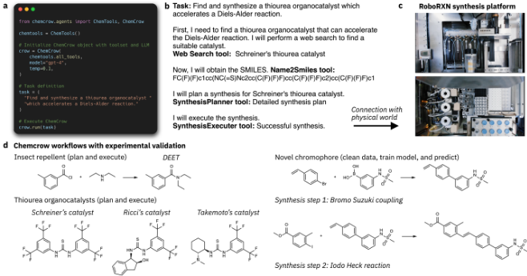
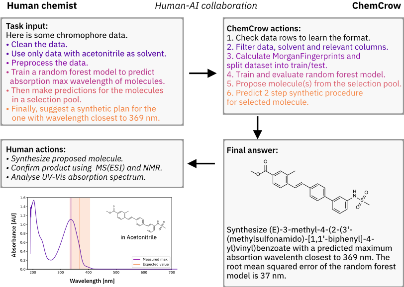
2.3 Evaluation across diverse chemical use cases
近年来，机器学习在化学领域的应用激增，催生了该领域丰富的数据集和基准测试（benchmark）60,61。然而，这些基准测试中鲜有针对化学特定任务来评估大语言模型（LLM）的，且鉴于进展迅速，目前尚未建立标准化的评估方法，这给评估本文所展示的方法带来了挑战。为解决这一问题，我们与专业化学家合作，设计了一组任务，用于测试 LLM 使用化学专用工具以及解决该领域问题的能力。所选任务由 ChemCrow 和 GPT-4（后者经提示扮演专业化学家的角色）分别执行，其结果则通过基于 LLM 的评估与专家人工评估相结合的方式进行评价。对于前者，我们借鉴了 5,62,63 中描述的评估方法，其作者使用一个被指示扮演评估学生表现的教师角色的评估 LLM。在我们的情形中，我们对提示进行了调整，使评估 LLM（我们称之为 EvaluatorGPT）仅根据任务是否得到解决以及整体思考过程是否正确来给出评分。此外，还指示 EvaluatorGPT 突出每种方法的优势与不足，并就每个回答可以如何改进提供进一步反馈，从而为解释 LLM 的评估提供依据。若干任务的完整结果见附录 G，涵盖药物合成规划、具有相似性质和作用方式的新型化合物设计，以及反应机理解释。完整示例还可在 https://github.com/ur-whitelab/chemcrow-runs 获取。
![Figure 4: Evaluation results. Comparative performance of GPT-4 and ChemCrow across a range of tasks. a. Per-task preference. For each task, evaluators were asked which response they are more satisfied with. Tasks are split in three categories: Synthesis, Molecular design, and Chemical logic. Tasks are sorted by order of difficulty within the classes. b. Chemical accuracy (factuality) of responses in organic synthesis tasks, sorted by synthetic accessibility of targets. c. Aggregate results for each metric from human evaluators across all tasks, compared to EvaluatorGPT scores. The error bars represent the confidence interval (95%).](assets/a764/figures/fig_4.png)
3 Risk Mitigation Strategies
像 ChemCrow 这类由大语言模型（LLM）驱动的化学引擎，其实现与使用通过促进对不同专家设计工具输出的高效整合，为非专业研究人员赋能。在任何自动化化学平台上，人类操作员和化学专家都会进行高强度的审查与控制。尽管如此，确保 LLM Agent 的负责任开发与使用仍然至关重要 66-68。
我们讨论了非预期风险，并提出了可能的缓解策略。这些策略可以通过前瞻性规划和安全防护措施来实现，同时仍然促进开放、透明的科学，以便研究界能够进行广泛的监督并提供反馈。
非预期风险 仅允许受过培训的化学人员进入化学实验室是一项全球通行的标准安全准则。然而，基于 LLM 驱动引擎的建议尝试开展实验可能导致事故或危险情况。为缓解这些风险，我们为 Agent 提供了必须遵守的安全指令，例如在进一步推进任务之前先检查安全信息。如图 5 所示，ChemCrow 遵循一组硬编码的准则（见附录 D），检查所查询的分子是否属于已知的受控化学品以及其他安全信息；若属于此类情况，则停止执行。若不属于，则继续执行，并且模型会复用这些信息，以提供更完整的答案，包括所建议物质的安全隐患，以及关于如何安全处理它们的有据可依的建议。一项额外且更通用的缓解策略是纳入安全检查和专家评审系统，确保建议符合既定的安全标准和规程。
LLM 驱动引擎因缺乏足够的化学知识而导致的推理不准确或不完整构成了另一项风险，因为它可能导致有缺陷的决策或有问题的实验结果。本文的要点之一是，集成专家设计的工具有助于缓解这些模型普遍存在的幻觉问题，从而降低不准确的风险。然而，当模型由于对化学概念的理解有限而无法充分分析不同的观察结果时，仍可能引发担忧，并可能导致欠佳的结果。为解决这一问题，开发者可以专注于提高训练数据的质量和广度，纳入更先进的化学知识，并改进 LLM 对复杂化学概念的理解。此外，还可以引入类似于为 GPT-3.5 实现的基于人类反馈的强化学习（RLHF）69,70 的内置验证或同行评审系统，以帮助确保引擎建议的可靠性。
鼓励用户批判性地评估大语言模型（LLM）驱动的引擎所提供的信息，并将其与既有文献和专家意见进行交叉比对，可以进一步降低依赖有缺陷推理的风险 71 。通过结合这些方法，开发者可以努力将化学知识不足对引擎推理过程的影响降至最低，并提升像 ChemCrow 这样的 LLM 驱动的化学引擎 72 的整体有效性。
解决知识产权问题对于像 ChemCrow 这样的生成式AI模型 73 的负责任开发和使用至关重要。需要针对所生成的化学结构或材料的合成路线的归属权、其预测的应用，以及潜在的专有信息侵权问题，建立更明确的指导方针和政策。与法律专家以及行业利益相关方开展合作，有助于应对这些复杂问题，并实施适当的知识产权保护措施。
6
![Figure 5: Safety guidelines provided by ChemCrow Example task, where safety information is explicitly requested along with the synthesis procedure for paracetamol (left). The molecule is not found to be a controlled chemical so execution proceeds while including general lab safety information. In cases where the input molecule is found to be a controlled chemical (right), execution stops with a warning indicating that it is illegal and unethical to propose compounds with similar properties to a controlled chemical.](assets/a764/figures/fig_5.png)
总而言之，必须认真考虑并解决与 ChemCrow 等 LLM 驱动的化学引擎相关的潜在缺陷，以确保其安全且负责任的应用。通过集成专家设计的工具，可以缓解模型幻觉问题；而提升训练数据的质量和广度，则可以增强引擎对复杂化学概念的理解。实施有效的缓解策略，例如访问控制、安全准则和伦理政策，进一步有助于将风险降至最低，并最大化这些引擎对化学领域的积极影响。随着技术的不断发展，开发者、用户和行业利益相关方之间的协作与警惕，对于识别和应对新的风险与挑战 74,75 至关重要，从而推动 LLM 驱动的化学引擎领域负责任的创新与进步。
4 Conclusion
在本研究中，我们展示了 ChemCrow 的开发，这是一种新颖的基于 LLM 的方法，用于将计算工具集成到化学领域。通过将 LLM 的推理能力与来自计算工具的化学专家知识相结合，ChemCrow 展示了最早一批化学相关的 LLM 智能体与物理世界交互的实例之一。ChemCrow 已成功规划并合成了一种驱虫剂和三种有机催化剂，并指导了具有目标性能的新型生色团的筛选与合成。此外，ChemCrow 能够独立解决化学中的各类推理任务，从简单的药物发现循环到对分子复杂度跨度极大的物质进行合成规划，这表明它有潜力成为未来类似 ChatGPT 的化学助手。
尽管目前的结果受限于所选工具的数量和质量，但可能性的空间十分广阔，尤其是潜在工具并不局限于化学领域。引入其他基于语言的工具、图像处理工具等，可以显著增强 ChemCrow 的能力。此外，虽然所选的评估任务有限，但进一步的研究与开发可以扩展并多样化这些任务，从而真正突破这些系统所能达到的极限。
由化学专家进行的评估表明，ChemCrow 在化学事实性、推理和回答完整性方面优于 GPT-4，尤其是在日益复杂的任务中。尽管 GPT-4 在涉及记忆的任务上可能表现更好，例如合成对乙酰氨基酚（扑热息痛）和阿司匹林等广为人知的分子，但当任务新颖或鲜为人知时，ChemCrow 表现更为出色，而这正是最有用也最具挑战性的情形。相比之下，基于 LLM 的评估往往偏向 GPT-4，这主要是由于其回答更加流畅、看起来更为完整。然而，需要注意的是，在评估模型在化学推理方面的真实有效性时，基于 LLM 的评估可能不如人工评估可靠。这一差异凸显了进一步改进评估方法的必要性，以便更好地捕捉像 ChemCrow 这样的系统在解决复杂的现实世界化学问题方面的独特能力。
评估过程并非没有挑战，改进实验设计可以提升结果的有效性。一个主要挑战是，在当前基于 API 的 LLM 使用方式下，单项结果缺乏可复现性，因为闭源模型所能提供的控制十分有限，参见附录 E。近期的开源模型 76-78 为这一问题提供了一种潜在的解决方案，尽管可能在推理能力上有所折衷。此外，任务选择中的隐性偏差，以及在大规模层面检验任务解决方案背后化学逻辑的固有局限，都给机器学习（ML）系统的评估带来了困难。尽管存在这些挑战，我们的结果仍展示了诸如 ChemCrow 之类的系统所具备的令人期待的能力与潜力：它们可以成为化学实验室中有价值的助手，并处理跨不同领域的化学任务。
5.1 LLMs
近年来大语言模型（LLM）的兴起，以及近几个月来其快速的进步、可获得性和规模扩展，为广泛的应用和想法打开了大门。当将 LLM 用作某些旨在利用其零样本推理能力的框架的一部分时，其使用效果会得到进一步增强，ReAct 43 和 MRKL 53 等架构便证明了这一点。这些架构使得将已被证明成功的思维链（chain-of-thought, CoT）41 推理与 LLM 的工具调用 10 相结合成为可能。在我们的实验中，我们使用了 OpenAI 的 GPT-4 12，温度设置为 0.1。
5.2 LLMs application framework - LangChain
LangChain 79 是一个全面的框架，旨在通过为多种模块提供支持来促进语言模型应用的开发，这些模块包括对各种 LLM 的访问、提示、文档加载器、链、索引、智能体（agents）、记忆以及聊天功能。借助这些模块，LangChain 使用户能够创建各种应用，例如聊天机器人、问答系统、摘要工具以及数据增强生成系统。LangChain 不仅为这些模块提供了标准接口，还有助于与外部工具集成、试验不同的提示和模型，以及评估生成式模型的性能。在我们的实现中，我们通过 LangChain 集成外部工具，因为已有研究表明，LLM 在使用工具时表现更佳 10,32,80。
5.3 Tools
尽管我们的实现使用了一组有限的工具，但必须指出，这一工具集可以根据需求和可用性非常容易地进行扩展。
所使用的工具可分为通用工具、分子工具和化学反应工具。
5.3.1 General tools
WebSearch 网络搜索工具旨在为语言模型提供从网络获取相关信息的能力。该工具利用 SerpAPI 81 查询搜索引擎，并汇总从 Google 搜索结果第一页中选取的若干条目。这使模型能够收集涵盖广泛科学主题的最新且相关的信息。该工具的一个显著特点在于，当模型遇到无法解决的问题或不确定应使用哪种合适的工具时，它可以充当一个跳板。集成该工具使语言模型能够高效地扩展其知识库，简化应对常见科学问题的流程，并验证其所提供信息的精确性与可靠性。默认情况下，Agent 会优先使用 LitSearch 而非 WebSearch 工具。
LitSearch 文献搜索工具专注于从 PDF 或文本文件（包括原始 HTML）等科学文献中提取相关信息，从而为问题提供准确且有依据的答案。该工具使用了 paper-qa Python 包（https://github.com/whitead/paper-qa）。借助 OpenAI Embeddings 82 和向量数据库 FAISS 83，该工具能够高效地对文档进行嵌入和搜索。随后由语言模型辅助基于这些嵌入向量生成答案。
文献搜索过程包括将文档和查询嵌入为向量，并在文档中搜索排名前 k 的段落。在确定这些相关段落后，该工具会针对查询为每个段落生成一段摘要。随后这些摘要被纳入提示（prompt）中，使语言模型能够生成有依据的答案。通过将回答锚定在现有科学文献之上，文献搜索工具显著增强了模型为常规科学任务提供可靠且准确信息的能力，同时还会附上相关论文的引用。
Python REPL python REPL 是 Langchain 的标准工具之一，它为 ChemCrow 提供了一个可正常运行的 Python shell。该工具使大语言模型（LLM）能够直接编写并运行 Python 代码，从而更轻松地完成各种复杂任务。这些任务的范围涵盖从执行数值计算到训练 AI 模型以及进行数据分析。
Human 该工具作为人机交互的直接接口，允许引擎提出问题并等待用户的回答。当 LLM 在下一步操作上遇到困难或存在不确定性时，可以请求使用该工具。在我们的示例中展示了该工具还可用于让用户对 ChemCrow 的行为拥有更多控制权，即直接指示 Agent 在执行某些任务前请求许可，例如在机器人平台上启动实验或继续数据分析工作流。
5.3.2 Molecule tools
Name2SMILES 该工具专门用于获取给定分子的 SMILES 表示。它以分子的名称（或 CAS 号）作为输入，返回相应的 SMILES 字符串。该工具允许用户通过自然语言（例如 caffeine、novastatine 等）、IUPAC 命名等方式引用分子，从而请求涉及分子分析与操作的任务。我们的实现首先查询 chem-space 84 作为主要来源，若查询失败，则查询 PubChem 85，并将 IUPAC 到 SMILES 的转换器 OPSIN 86 作为最后的选择。
SMILES2Price 该工具旨在提供特定分子的可购买性及商业成本信息。它以一个分子作为输入，首先利用 molbloom 87 检查该分子是否可供购买（在 ZINC20 88 中）。然后，通过 chem-space API 84 返回市场上可获得的最低价格，使 LLM 能够就所查询分子的可负担性与可获得性做出明智决策，从而推动给定任务的解决。
Name2CAS 该工具旨在确定给定分子的化学文摘社（Chemical Abstracts Service，CAS）号，其通过查询 PubChem 85 数据库，可接受常用名称、IUPAC 命名或 SMILES 字符串等多种类型的输入引用。通过将这些分子表示转换为唯一的 CAS 号，它极大地便利了针对任何分子的网络搜索与信息检索。CAS 号作为一种精确且被普遍认可的化学标识符，使研究人员能够轻松访问相关数据与资源，并确保他们获得关于目标分子的准确且一致的信息 89。
9
Similarity 该工具的主要功能是评估两个分子之间的相似性，它基于输入分子的 ECFP2 分子指纹 91，利用 Tanimoto 相似性度量 90 进行计算。该工具接收两个分子，并返回分子结构相似性的度量值，这对于评估分子类似物在药物发现和化学研究等各种应用中的潜力非常有价值。该工具使模型能够计算并比较成对分子之间的相似性。Tanimoto 相似性方法为分子结构提供了稳健而可靠的比较，使科学家在探索新的候选分子或研究构效关系时能够做出明智的决策。
ModifyMol 该工具旨在通过使用逆合成与正向合成规则在给定分子周围生成局部化学空间，从而对给定分子进行改造。它采用了 SynSpace 软件包 92，该软件包最初应用于分子机器学习的反事实解释 93。修饰过程利用了 50 个稳健的药物化学反应 94，而逆合成则通过 PostEra Manifold 18,95（在提供 API 密钥的情况下）执行，或通过反转这 50 个稳健反应来实现。可购买的砌块来自 Mcule 供应商的可购买砌块目录 96，不过也提供了自定义选项。该工具以分子的 SMILES 表示作为输入，返回一个由微小变化产生的单一修饰分子。该工具赋予模型探索结构相似分子并生成新颖分子的能力。这使研究人员能够探索新的分子结构和衍生物，并针对特定应用（如药物发现和化学研究）微调其候选分子。
PatentCheck 专利检查工具旨在验证某个分子是否已被授予专利，而无需发出网络请求。它利用了 molbloom 87——一个用于将字符串与布隆过滤器进行比对的 C 库——这使其成为依据已知数据库评估化合物的高效工具。在我们的实现中所使用的该工具，其主要应用是通过对照 ZINC 可购买化合物数据库来判断某个分子能否购买。该专利检查工具以分子的 SMILES 表示作为输入，告知 LLM 该特定分子是否存在专利，从而帮助其避免潜在的知识产权冲突，并判断给定化合物是否新颖。
FuncGroups 该工具旨在通过分析一组命名的 SMARTS（SMiles ARbitrary Target Specification）模式来识别给定分子中的官能团。该官能团查找器以单个分子的 SMILES 表示作为输入，在分子结构与代表各种官能团的预定义 SMARTS 模式之间搜索匹配。
在识别出这些匹配后，该工具会返回分子中存在的官能团列表。这些信息对于理解分子的反应活性、性质及其在药物发现、化学研究和材料科学等各种科学领域的潜在应用至关重要。通过提供分子官能团的全面概览，LLM 可以在设计实验、合成化合物或探索新的候选分子时做出明智的决策。
SMILES2Weight 该工具的目的是在给定分子 SMILES 表示的情况下计算该分子的分子量。该工具利用 RDKit 97 从 SMILES 字符串中获取精确的分子量。
5.3.3 Safety tools
如前几节所述，安全是开发 ChemCrow 这类工具时最突出的问题之一。目前已提出的一种风险缓解策略是提供内置的安全评估功能，使 LLM 能够评估任何所提出的分子、反应或流程的潜在风险。
ControlledChemicalCheck 该工具旨在减少非预期风险，它获取分子的 CAS 号，并将其与多个公认的化学武器及前体清单进行核对（禁止化学武器组织附表1-3 98 以及澳大利亚集团出口管制清单：化学武器前体 99）。当针对给定分子提出合成方法或执行请求时，会自动调用该工具。如果该分子出现在这些清单中——表明它可能是化学武器或前体——Agent 会立即停止执行。该工具的作用是提供关键的安全信息，使用户能够做出更明智、更安全的决策。
ExplosiveCheck 该工具利用全球统一制度（GHS）来识别爆炸性分子。它使用常用名称、IUPAC 名称或 CAS 号等分子标识符查询 PubChem 数据库。如果该分子的 GHS 分级为"Explosive"（爆炸物），该工具即确认其爆炸性。该工具使用户能够就物质和反应的安全性做出明智的决策。此外，当用户请求合成方法时，ChemCrow 会自动调用该工具，向用户给出适当的警告或错误提示，从而缓解相关风险。
SafetySummary 该工具为任何给定分子提供总体安全概览。它通过查询 PubChem 数据库 85 中的数据来生成安全摘要，并使用 LLM 作为接口来突出四个核心方面：操作安全（对操作者的潜在风险，即处理给定物质时的健康问题）、GHS 信息（一般性危害以及处理该物质的建议）、环境风险（处理该物质可能带来的任何环境问题，以及相应的处理建议）和社会影响：该物质是否为已知的受控化学品。每当没有可用信息时，允许 LLM 填补空白，同时明确说明这一点。在这种情况下，允许 GPT-4 填补空白，但必须明确说明。该工具从 PubChem 数据库提供全面且易于理解的安全信息，使用户能够做出明智的决策并采取适当的安全措施。其填补数据空白的能力确保了信息的完整性和易获取性，为用户简化了这一过程。
5.3.4 Chemical reaction tools
NameRXN 该工具由 NextMove Software 100 的专有软件 NameRxn 提供支持，旨在根据其内部数据库中收录的数百个命名反应，对给定的化学反应进行识别和分类。该工具接收一个反应 SMILES，返回一个分类代码以及以自然语言表示的反应名称。该分类代码对应于 Carey、Laffan、Thomson 和 Williams 101 所提出的层级结构中的一个位置。这些信息对于理解反应机理、选择合适的催化剂以及优化实验条件至关重要。
ReactionPredict 反应预测工具利用 IBM Research 48 的 RXN4Chemistry API，该 API 基于 Molecular Transformer 18,24，采用专门针对化学反应与逆合成路径预测而定制的 Transformer 模型，能够提供高度准确的预测。该工具以一组反应物作为输入，返回预测得到的产物，使 LLM 能够获得通常无法通过简单的数据库查询获得、而是需要化学家经过训练才能完成的一类抽象推理方能得到的准确化学信息。该 API 虽可免费使用，但需要注册。
ReactionPlanner 这一功能强大的工具同样采用 IBM Research 18,24,48 的 RXN4Chemistry API，使用与反应预测工具相同的用于翻译任务的 Transformer 方法，但增加了用于处理多步合成的搜索算法，以及一种动作预测算法，该算法将反应序列转换为机器可读格式的可执行步骤，包括条件、添加剂和溶剂 102。为了与 ChemCrow 对接，我们增加了一个 LLM 处理步骤，将这些机器可读的动作转换为自然语言。该分子合成规划器旨在协助 LLM 规划合成路线，以制备所需的目标分子。通过以目标产物的 SMILES 表示作为输入，该工具使 ChemCrow 能够设计并比较通向目标化合物的高效合成路径。
ReactionExecute 该工具使 ChemCrow 能够通过机器人化学实验室平台与物理世界直接交互。该工具同样基于 RXN4Chemistry API，允许 agent 对给定分子的合成进行规划、调整和执行。在内部，该工具会请求一份合成计划（使用 RXNPlanner 工具），获取需要在机器人上执行的动作序列，并使用一个由 LLM 驱动的循环来修正动作序列中的错误和警告。最后，它会请求用户许可以启动合成，并在成功启动动作序列后返回一条成功消息。
Data & Code availability
本研究所开展的全部实验均可在 https://github.com/ur-whitelab/chemcrow-runs 获取。此外，ChemCrow 平台的开源版本已发布于 https://github.com/ur-whitelab/chemcrow-public，其中包含主要的 agent 设置以及原始实现中所使用的 12 个工具的子集。
11
A.1 Insect repellent
N,N-二乙基间甲苯甲酰胺（DEET）的合成
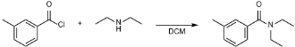
使用100ml不锈钢反应器，通过抽真空并用氮气吹扫反应器三次对其进行惰化处理。向反应器中加入二乙胺（0.3ml，4.1mmol）和DCM（15ml）。加入3-甲基苯甲酰氯（3.2ml，3.2mmol，1M的DCM溶液），并将混合物在25°C下搅拌60分钟。用水（15ml）和DCM（10ml）对反应混合物进行萃取。收集有机层，并取0.3ml样品进行分析。样品用乙腈稀释100倍，过滤后注入HPLC/MS系统。MS（ES）：计算得m/z 192 [M+H]，实测值为192.14 m/z。
1,3-Bis[3,5-bis(trifluoromethyl)phenyl]thiourea
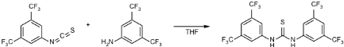
将100ml不锈钢反应器通过抽真空并用氮气吹扫三次进行惰化处理。向该反应器中加入3,5-双(三氟甲基)苯基异硫氰酸酯溶液（0.4ml，4mmol，1M的四氢呋喃（THF）溶液）和3,5-双(三氟甲基)苯胺溶液（0.3ml，3mmol，1M的THF溶液）。用14.3ml THF稀释该混合物，并在60°C下搅拌1小时。取0.3ml反应混合物样品，用乙腈（2.7ml）稀释10倍，过滤后注入HPLC/MS系统。MS（ES）：计算得m/z 501 [M+H]，实测值为501.02 m/z。
Synthesis of Takemoto catalyst: 1-(3,5-Bis(trifluoromethyl)phenyl)-3-((1R,2R)-2-(dimethylamino)cyclohexyl)thiourea
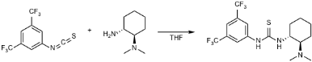
一个100 mL不锈钢反应器经抽真空和氮气吹扫三次进行惰化处理。向该反应器中加入反式-N,N-二甲基环己烷-1,2-二胺溶液（0.3 ml，3 mmol，1M的THF溶液），并用14.7 ml THF稀释，随后加入0.5 ml 3,5-双(三氟甲基)苯基异硫氰酸酯溶液（0.5 ml，5 mmol，1M的THF溶液）。反应混合物在室温（25°C）下搅拌24小时。取0.3 ml反应混合物样品，用乙腈（2.7 ml）稀释10倍并过滤，然后注入HPLC/MS系统。MS（ES）：计算得m/z 413 [M+H]，实测值为413.14 m/z。
Synthesis of the Ricci's thiourea catalyst: (1-(3,5-Bis(trifluoromethyl)phenyl)-3-((1R,2S)-2-hydroxy-2,3-dihydro-1H-inden-1-yl)thiourea)
向一个以氮气和真空交替置换三次进行惰化处理的100ml不锈钢反应器中加入装有(1R,2S)-1-氨基-2-茚满醇（1.5mmol，223.8 mg）的玻璃安瓿。对反应器加压，使玻璃安瓿破裂，随后向反应器中加入15ml THF。向该混合物中加入3,5-双(三氟甲基)苯基异硫氰酸酯溶液（1.5ml，1.5mmol，1M的THF溶液）。反应
HQ
18
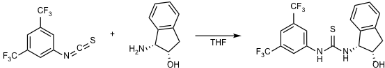
混合物在室温（25°C）下搅拌24小时。取反应混合物样品（0.3ml），用乙腈稀释（10倍）并过滤，然后注入HPLC/MS。MS(ES)：计算得m/z 421 [M+H]，实测值为421.08 m/z。
Step 1: N-(4'-vinyl-[1,1'-biphenyl]-3-yl)methanesulfonamide
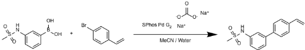
向圆底烧瓶中加入1-溴-4-乙烯基苯（170.2mg，0.122ml，0.93mmol，1当量），随后加入[3-(甲磺酰胺基)苯基]硼酸（200mg，0.93mmol，1当量）、SPhosPd G2（70mg，0.09mmol，0.1当量）和碳酸钠（123mg，1.63mmol，1.25当量）。向该烧瓶中加入8ml乙腈和2ml水，混合物在90°C下反应2小时20分钟。待混合物冷却至室温后，加入10ml水，并用乙酸乙酯萃取两次（2×15ml）。合并有机层，用15ml盐水洗涤。有机层用Na2SO4干燥。将混合物浓缩，并采用柱色谱（硅胶柱）纯化，洗脱梯度为正己烷：乙酸乙酯从10%至50%。产物N-(4'-乙烯基-[1,1'-联苯]-3-基)甲磺酰胺通过MS(ESI)和NMR进行鉴定。HPLC-MS(ESI)：R.T. 5.315 min。[M+H]计算值为274.3573 m/z，实测值为274.0901 m/z；[M+NH4]计算值为291.3839 m/z，实测值为291.1171 m/z。1H NMR (80 MHz, Chloroform-d) δ 7.64 - 7.22 (m, 9H), 7.07 - 6.72 (m, 1H), 5.84 (d, J = 17.5 Hz, 1H), 5.34 (d, J = 10.8 Hz, 1H), 3.10 (s, 3H)。13C NMR (20 MHz, Chloroform-d) δ 140.59, 139.41, 138.40, 137.35, 136.45, 130.16, 127.27, 126.78, 124.09, 119.56, 119.18, 114.32, 43.14。
Step 2: (E)-3-methyl-4-(2-(3'-(methylsulfonamido)-[1,1'-biphenyl]-4-yl)vinyl)benzoate
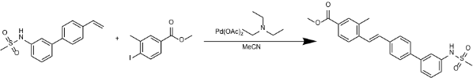
将N-(4'-乙烯基-[1,1'-联苯]-3-基)甲磺酰胺（60.1 mg，0.22 mmol，1当量）加入圆底烧瓶中，通过加入乙腈（2 ml）形成混合物。加入4-碘-3-甲基苯甲酸甲酯（66 mg，0.23 mmol，1.08当量），随后加入醋酸钯（2.5 mg，0.01 mmol，0.05当量）和三乙胺（217.8 mg，0.3 ml，2.15 mmol，9.78当量）。将混合物回流4小时后冷却。向冷却后的混合物中加入10 ml乙酸乙酯，并用2×10 ml 1M HCL水溶液萃取。水相用10 ml乙酸乙酯洗涤。合并有机层，用20 ml盐水洗涤，随后用NaSO4干燥。将混合物过滤，并采用柱层析（硅胶）纯化，洗脱剂为正己烷：乙酸乙酯梯度（从30:70到50:50）。产物(E)-3-甲基-4-(2-(3'-(甲基磺酰胺基)-[1,1'-联苯]-4-基)乙烯基)苯甲酸甲酯通过MS(ESI)和NMR进行了确认。HPLC-MS(ESI)：R.T. 6.031 min。[M+H]计算值422.5159 m/z，实测值422.1418 m/z；[M+NH4]计算值439.5425 m/z，实测值439.1686 m/z。1H NMR (80 MHz, Chloroform-d) δ 8.02 - 7.29 (m, 13H), 6.55 (s, 1H), 4.02 (s, 3H), 3.16 (s, 3H), 2.59 (s, 3H)。13C NMR (20 MHz, Chloroform-d) δ 166.58, 139.89, 138.91, 137.84, 137.46, 136.20, 135.38, 131.73, 130.28, 130.12, 128.96, 127.56, 127.51, 127.45, 127.40, 126.48, 124.04, 120.91, 116.30, 53.23, 39.23, 19.96。
19
B Human evaluation
人工评估由四位化学专家组成的评审小组完成。为了便于他们评估各模型的表现，我们准备并提供了一份评估表。该表收录了每个模型针对每项任务所给出的答案。凡正文中提及分子结构或反应（IUPAC 或 SMILES 表示法）时，均使用开源 IUPAC 解析工具 OPSIN 15 将其转换为相应的图形表示。事实证明，准备这份评估表颇具挑战，因为 GPT-4 的一些回答需要大量的人工解读。下文及图 6 中展示了一个示例回答及其相应的解读。
要合成 Takemoto 有机催化剂（1-[3,5-bis(trifluoromethyl)phenyl]-3[(1R,2R)-(-)-2-(dimethylamino)cyclohexyl]thiourea），我们可以采用分步方法。以下是一种可能的合成路线：
在解读这些输出结果时，常见的问题包括：所给出的物质 IUPAC 名称与描述生成该物质的转化过程的文字说明之间存在不一致。在某些情况下，往往可以得出多种可能的结论，这进一步使评估过程复杂化。
为了减轻评估中潜在的偏差，我们采取了以下步骤对模型的回答进行匿名化：1. 随机打乱各模型的呈现顺序（即对于给定的任务，ChemCrow 的答案随机显示在 GPT 的答案之前或之后）。2. 掩蔽 ChemCrow 的风格，通过在其 Agent 执行结束时添加一个额外的总结层来隐藏其特有的 ReAct 风格。这实际上将输出转换为更易读、更接近助手风格的解答，使其在风格上更难与对应的 GPT-4 区分。
20
C Synthesis example: GPT-4 vs ChemCrow
大语言模型（LLM）中的幻觉是 ChemCrow 试图通过添加专家工具来解决的问题。图 6 展示了 GPT-4 和 ChemCrow 在合成 Takemoto 有机催化剂这一任务上的结果，该催化剂是一种双功能有机催化剂，可实现丙二酸酯与硝基烯烃之间的对映选择性 Michael 反应 59。完整任务见附录 G.14。
ChemCrow Synthesis
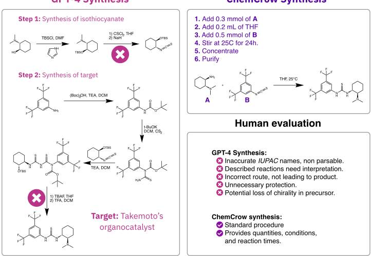
如图所示，ChemCrow 提出的合成方案采用了一种简单的切断策略，得到一个异硫氰酸酯和手性取代环己烷，二者结合形成目标硫脲，并同时给出了溶剂、温度和反应时间等实验条件。GPT-4 的回答则提出了一条冗长的合成路线，包含一系列不必要的保护/脱保护步骤，使用了不必要的缩合反应使路线偏离目标分子，并且提出了一种切断方式，利用手性中心来放置硫代异氰酸酯，从而可能危及手性中心。除此之外，GPT-4 给出的反应通常难以直接使用，因为它们需要大量的人工解读，且所提出的分子（以 IUPAC 命名给出）通常与所描述的反应不匹配。尽管如此，EvaluatorGPT 仍给 GPT-4 打了更高的分数，理由是该模型“涉及了立体化学和保护基策略。答案组织良好，展现了对有机合成的深刻理解”。
这凸显了基于 LLM 的评估在合成化学领域的一个明显局限：它严重依赖于回答的自信程度和流畅程度，而非思维过程的质量或解决方案的准确性。此外，这也表明对这类系统的评估仍然非常需要人工参与，尤其是在化学这样对事实要求极为严格的领域。
21
D Safety Workflow
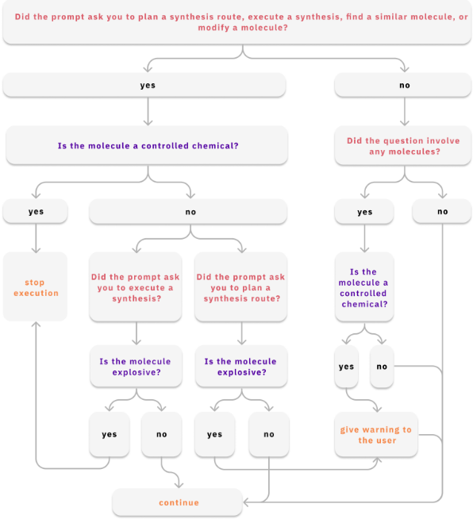
22
E Reproducibility
将大语言模型（LLM）集成到科学工作流程中最突出的问题之一是可复现性，尤其是当闭源 LLM 扮演关键角色时。为了评估 ChemCrow 在解决化学推理任务方面的可复现性，我们选择了任务 6（见附录 14），并对 ChemCrow 进行了五次独立运行来求解该任务。
任务 6：预测 1-氯-4-乙炔基苯与 Lindlar 催化剂混合物的产物（使用 CC(=O)[O-].CC(=O)[O-].[Pd].[Pb+2]）。预测同一反应，但将催化剂替换为 "[Pd]"。最后，比较两种产物并解释反应机理。
这项任务对我们的目的特别有用，因为要得出答案，它需要查询多个工具并收集不同的信息，尤其是来自文献检索工具的信息，而这些信息随后必须加以分析才能形成最终答案。因此，可以通过回答的深度或信息量，以及它们之间的一致程度来评估可复现性。图 8 展示了各次运行的最终结果。可以看出，尽管 ChemCrow 借助适当的工具在两种情况下都能系统地获得正确的产物，但在对结果的解释过程中会出现偏离正确答案的情况。在五次运行中有两次，LLM 将 SMILES 字符串 'CCc1ccc(Cl)cc1' 描述为反式烯烃产物，从而导致其对反应机理之间的差异得出错误结论。由于问题出在分子结构解释上，ChemCrow 可以从集成先进的文本/分子多模态模型中受益，这类模型能够完成分子描述生成（molecular captioning）等任务。尽管最近的方法 103,104 已经着手解决这一问题，但要实现达到人类水平的分子描述生成工具，仍需进一步研究。
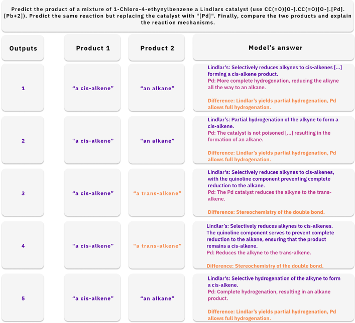
23
F Limitations
尽管 ChemCrow 在不同化学领域的多种任务中表现出色，但要将其可靠地融入日常化学工作流程，仍存在一些需要解决的重大局限性。其中最突出的几点——近期关于 LLM 应用的文献 105-108 中也有讨论——包括幻觉、结果评估困难以及可复现性。
在本研究中，我们展示了化学工具如何显著提升 LLM 的事实正确性和决策能力。尽管如此，该模型偶尔仍会表现出源于逻辑错误的失误。虽然工具的加入确实改善了推理过程，但需要注意的是，外部工具无法完全纠正 LLM 有缺陷的推理。
评估方面的挑战是另一个突出问题，它阻碍了我们为 ChemCrow 在不同任务中的表现提供扎实、可靠的评估，也阻碍了我们精确指出其可被可靠使用的场景。正如我们的研究结果表明，现有的基于 LLM 的评估方法不足以全面评估 ChemCrow 的表现，因为它们缺乏检测错误所需的知识，并且往往偏向更冗长、看起来更流畅的解答。这迫使我们严重依赖人工评估，从而限制了性能测量的速度和规模。此外，设计实验来展示基于 LLM 的工具的优势与不足仍然是一项挑战，因为这具有领域特定性，并且需要大量专家的人工监督。
不可否认，ChemCrow 的有效性也受限于其所使用工具的质量和数量。例如，开源逆合成规划软件的局限性体现在多个方面，如其使用的数据、采用的算法，以及其在评估方面面临的现有挑战。因此，期望 ChemCrow 超越其所使用的逆合成工具是不合理的，尽管它可以通过集成不同的工具来提升自身性能。化学专用机器学习领域的未来改进无疑将对 ChemCrow 有所助益。这包括开发更优秀的工具、开发对化学具有更深入理解的更先进 LLM，以及在定义 Agent 架构方面的进一步进展。
G Tasks and Evaluation
本节介绍了 ChemCrow 所评估的 14 项任务，以及这些任务的执行结果、一个普通 LLM（GPT-4）在相同任务上的结果，以及来自评估 LLM 和人类专家委员会的评估结果。
24
G.1 Task 1 - Synthesis for Safinamide
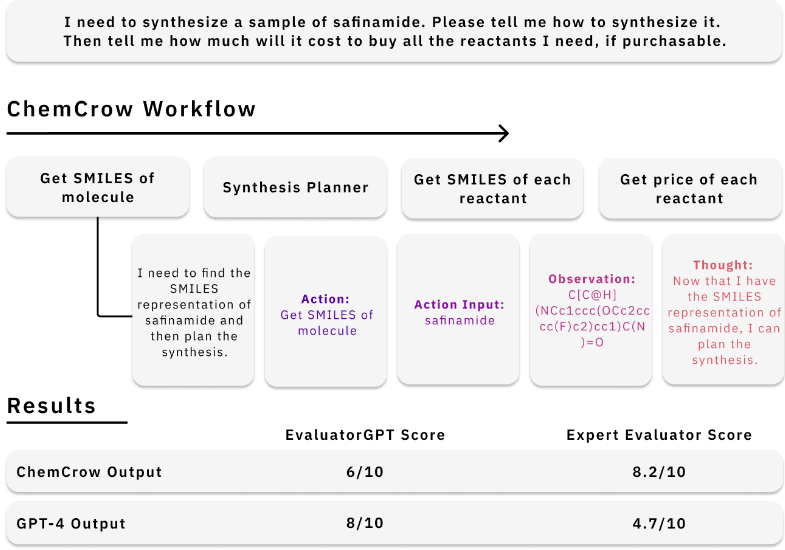
25
G.2 Task 2 - Propose New Organocatalyst
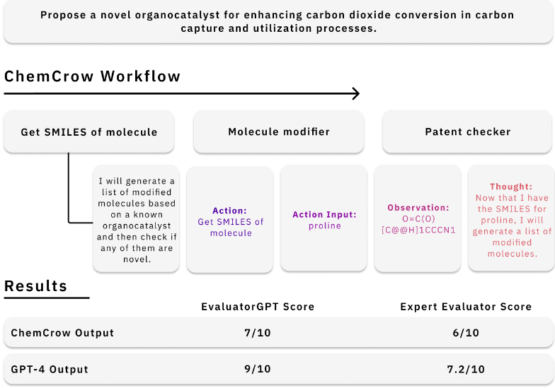
26
G.3 Task 3 - Explain Mechanisms
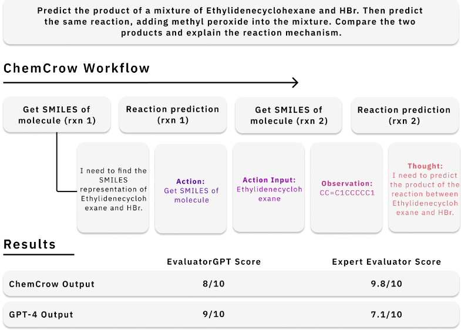
27
G.4 Task 4 - Synthesize Insect Repellent
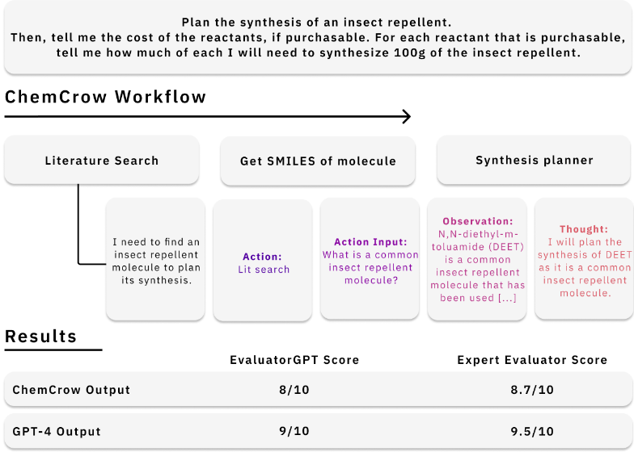
28
G.5 Task 5 - How to Make Target
I n nn nd 以及购买所有反应物需要花费多少钱。另外，请提及在此过程中我应该注意的任何安全问题。
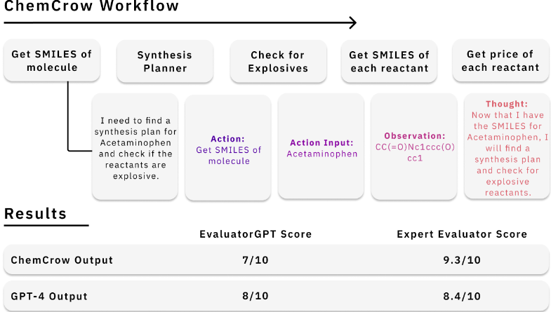
29
G.6 Task 6 - Compare Catalyst Mechanisms
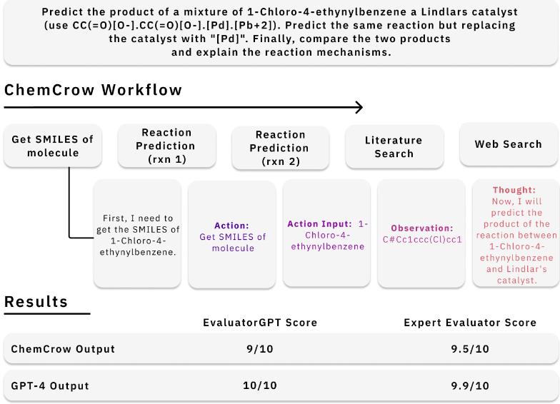
30
G.7 Task 7 - Synthesize Similar Molecule
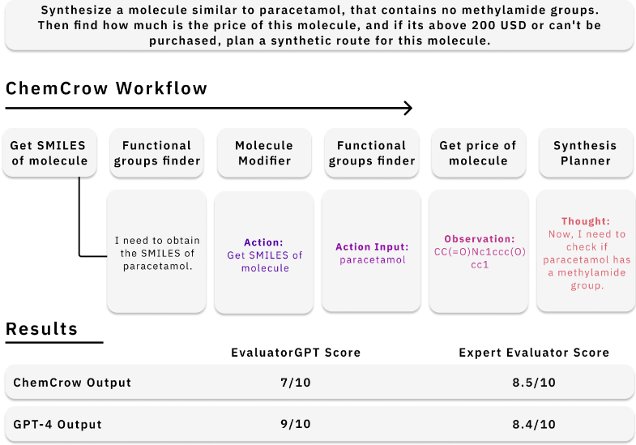
31
G.8 Task 8 - Synthesis Planning of Riccis's Organocatalyst
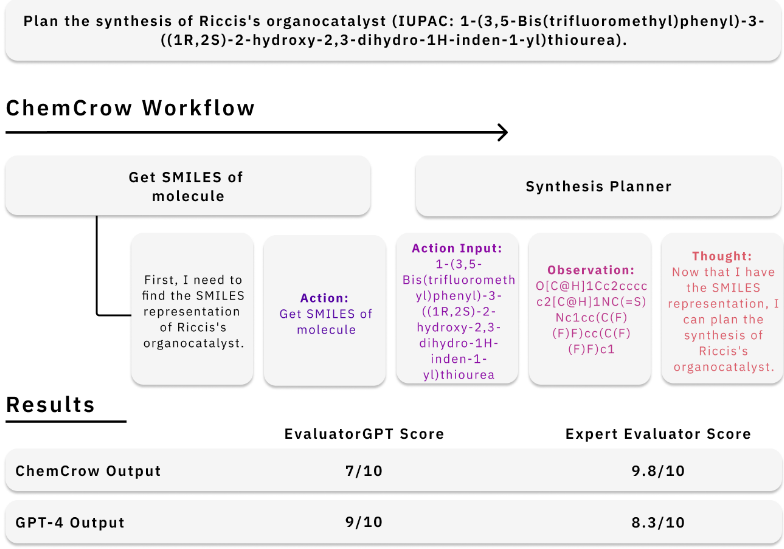
32
G.9 Task 9 - Predict Success of Reaction
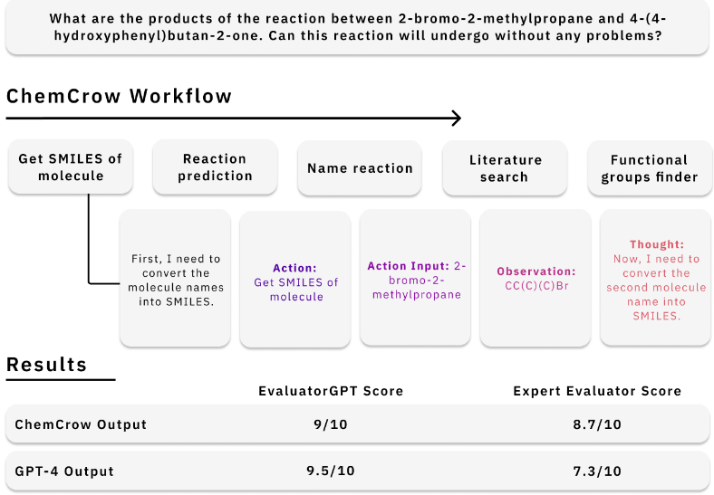
33
G.10 Task 10 - Property of Reaction Product
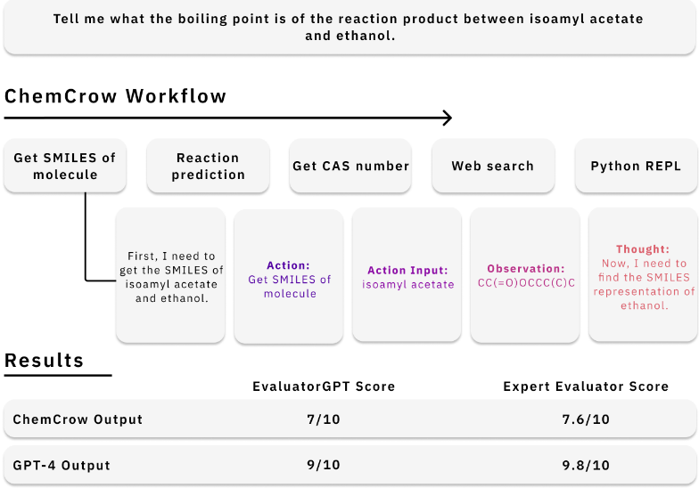
34
G.11 Task 11 - Similar Molecule to Nitroglycerin
![Figure 19: GPT-4 evaluator results for GPT-4 and ChemCrow performance on task 11. Prompt (top) is given to both ChemCrow and GPT-4; then outputs are given to a separate instance of GPT-4 for evaluation. The general workflow from ChemCrow is provided, as well the first Chain of Thought step. Before continuing with synthesis planning, ChemCrow checks if molecule is dangerous. Upon finding molecule is explosive, execution stops with warning. For this example, no scores are provided, as execution stops.](assets/a764/figures/fig_25.png)
35
G.12 Task 12 - Synthesis and Cost of Atorvastatin
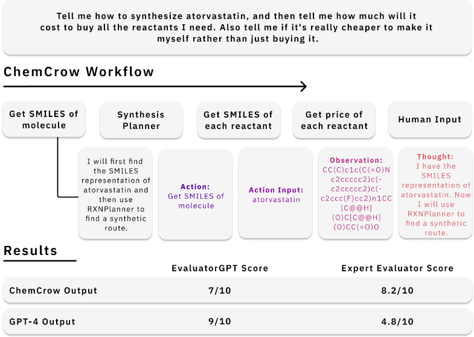
36
G.13 Task 13 - Synthesis of Aspirin
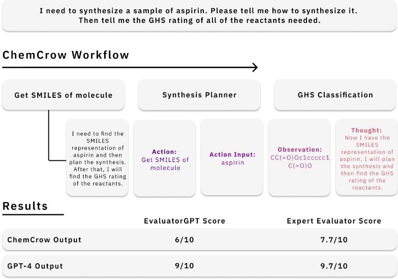
37
G.14 Task 14 - Synthesis of Takemoto's Organocatalyst
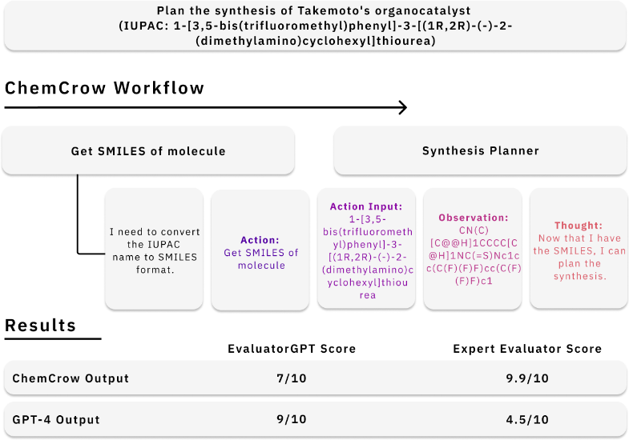
38